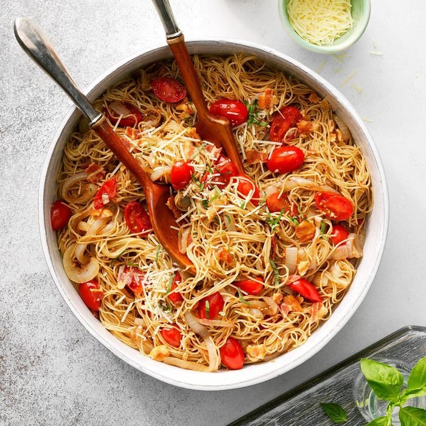

Caramelized Onion & Garlic Pasta

Preparation Time: 35mins
Ingredients Required:
- 1/4 cup butter, cubed
- 2 large sweet onions, thinly sliced
- 1/4 teaspoon crushed red pepper flakes
- 1/8 teaspoon salt
- 8 garlic cloves, minced
- 2 cups grape tomatoes, halved
- 1/4 cup balsamic vinegar
- 1/4 cup olive oil, divided
- 1 package (16 ounces) uncooked angel hair pasta
- 9 bacon strips, cooked and crumbled
- 2/3 cup shredded Parmesan cheese
- 1/2 teaspoon coarsely ground pepper
- Fresh basil leaves, optional
Instructions:
-
In a large skillet over medium-high heat, melt butter. Add the onions,
pepper flakes and salt; saute until onions are tender. Stir in garlic.
Reduce heat to medium-low; cook, stirring occasionally, for 30-40
minutes or until onions are deep golden brown.
-
Add the tomatoes, vinegar and 2 tablespoons oil to the skillet. Cook
pasta according to package directions. Drain pasta; toss with onion
mixture.
-
Drizzle with remaining olive oil. Sprinkle with bacon, cheese, and
pepper; heat through. Garnish with basil if desired.